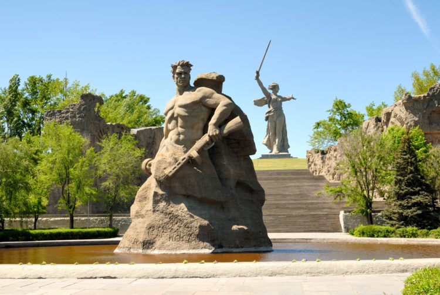

6. Мамаев курган (Волгоград)

Мамаев курган – холм, возвышающийся неподалеку от Волги, уже давно стал памятным местом, связанным, к сожалению, с трагическими событиями Отечественной войны 1941-1945. Этот монумент памяти героев Сталинградской битвы открыли в Волгограде в 1967 году. На холме захоронены останки воинов – защитников Сталинграда. Тут же установили статую Родина-мать высотой 86 метров. Её видно еще за несколько километров каждому путешественнику, прибывающему в Волгоград. Меч в руке статуи общим весом 14 тонн достигает высоты 33 метров. Вес всей скульптуры приближается к 1,500 тоннам. Говорят, что в ладони статуи может поместиться крупный внедорожник! Часто гости города, отправляющиеся к этой достопримечательности России, возлагают к подножью Мамаева кургана и Вечному огню цветы, чтя память жертв фашизма. Гости города, размышляющие над тем, что посмотреть в России и в самом Волгограде, безусловно, должны полюбоваться на величественную церемонию смены караула, проходящую на Мамаевом кургане каждый час, начиная с 9 часов утра и заканчивая 19.00. Кроме этого, путешественники, заказавшие сюда экскурсию, увидят оружие времен ВОВ – многотонные танки и пушки.